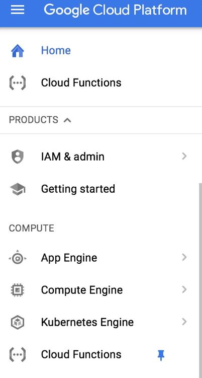
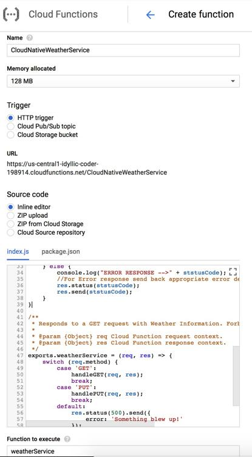
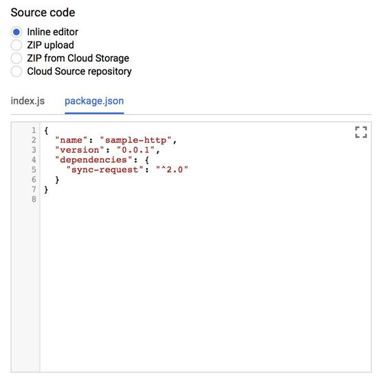
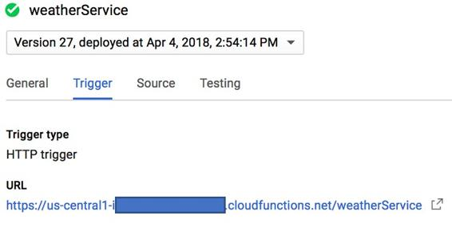
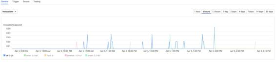
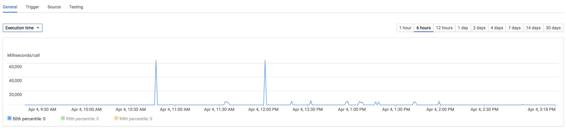
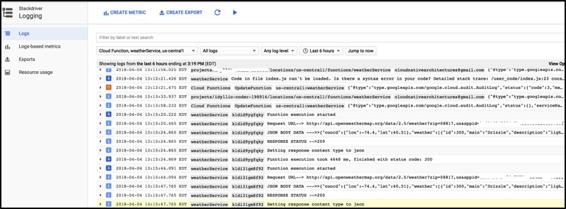

Serverless microservice – sample walkthrough
As in previous chapters, we will create a serverless microservice using Google Cloud Functions, so let's follow these to create a working example:


function handlePUT(req, res) {
// Return Forbidden message for POST Request
res.status(403).send('Forbidden!');
}
function handleGET(req, res) {
// Retrieve URL query parameters
var zip = req.query.zip;
var countrycode = req.query.countrycode;
var apikey = req.query.apikey;
// Create complete OpenWeatherMap URL using user-provided parameters
var baseUrl = 'http://api.openweathermap.org/data/2.5/weather';
var completeUrl = baseUrl + "?zip=" + zip + "," + countrycode + "&appid=" + apikey;
console.log("Request URL--> " + completeUrl)
// Import the sync-request module to invoke HTTP request
var weatherServiceRequest = require('sync-request');
// Invoke OpenWeatherMap API
var weatherServiceResponse = weatherServiceRequest('GET', completeUrl);
var statusCode = weatherServiceResponse.statusCode;
console.log("RESPONSE STATUS -->" + statusCode);
// Check if response was error or success response
if (statusCode < 300) {
console.log("JSON BODY DATA --->>" + weatherServiceResponse.getBody());
// For Success response, return back appropriate status code, content-type and body
console.log("Setting response content type to json");
res.setHeader('Content-Type', 'application/json');
res.status(statusCode);
res.send(weatherServiceResponse.getBody());
} else {
console.log("ERROR RESPONSE -->" + statusCode);
//For Error response send back appropriate error details
res.status(statusCode);
res.send(statusCode);
}
}
/**
* Responds to a GET request with Weather Information. Forbids a PUT request.
*
* @param {Object} req Cloud Function request context.
* @param {Object} res Cloud Function response context.
*/
exports.weatherService = (req, res) => {
switch (req.method) {
case 'GET':
handleGET(req, res);
break;
case 'PUT':
handlePUT(req, res);
break;
default:
res.status(500).send({
error: 'Something blew up!'
});
break;
}
};

Here's the code snippet to put in the package.json window:
{
"name": "sample-http",
"version": "0.0.1",
"dependencies": {
"sync-request": "^2.0"
}
}

https://us-central1-abcdef-43256.cloudfunctions.net/weatherService/?zip=10011&countrycode=us&apikey=vjhvjvjhvjhv765675652hhjvjsdjysfydfjy
Now, use any internet browser of your choice and go to this URL and see the magic for yourself! If the function executes successfully, then you should be able to see a JSON response with weather information for the location you specified in the parameters.
$ curl -X GET 'https://us-central1-idyllic-coder-198914.cloudfunctions.net/weatherService/?zip=10001&countrycode=us&apikey=098172635437y363535'
{"coord":{"lon":-73.99,"lat":40.73},"weather":[{"id":500,"main":"Rain","description":"light rain","icon":"10d"}],"base":"stations","main":{"temp":285.07,"pressure":998,"humidity":87,"temp_min":284.15,"temp_max":286.15},"visibility":16093,"wind":{"speed":10.8,"deg":290,"gust":14.9},"clouds":{"all":90},"dt":1522869300,"sys":{"type":1,"id":1969,"message":0.0059,"country":"US","sunrise":1522837997,"sunset":1522884283},"id":420027013,"name":"New York","cod":200}

Invocation/sec view


So with this, we have completed an end-to-end demo of how to design a serverless microservice using Google functions.